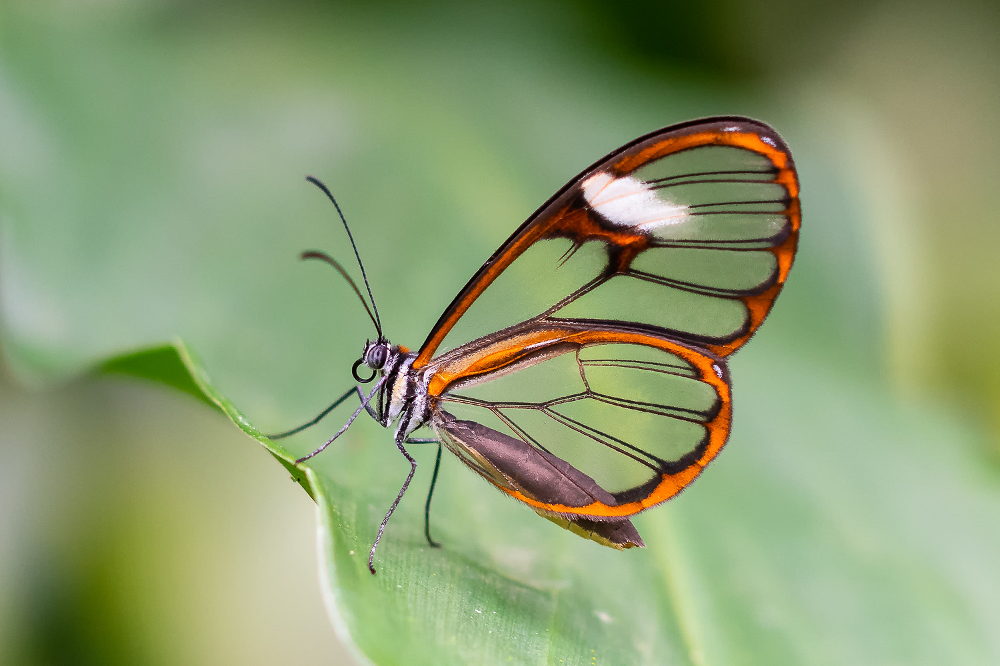

Descripción
Esta especie presenta una amplitud alar de 28 a 30 milímetros. Los sexos son similares, por lo que a simple vista no es posible diferenciar entre machos y hembras de la misma especie. El ala anterior es transparente, en el extremo de la celda discal tiene una franja de color negro; y del área postmedia al torno presenta una franja de color blanco. El ápice y sub ápice son de color negro y el torno es de color negro. El ala posterior también es transparente y posee venas de color negro. El margen distal e interno es de color café. Los huevos son de color blanco, puestos en solitario (no en grupo), en el envés de las hojas. La larva en quinto estadio tiene la cápsula de la cabeza de color verde claro con manchas redondas de color negro a los lados. El cuerpo es una combinación entre los colores verde-blanco, con una línea lateral amarilla a cada lado, encima de esta tiene una línea de color verde oscuro. La pupa es comprimida, el cremaster es de color negro, parches alares en tonos plateados, con líneas de color verde oscuro y salpicada de puntos de color negro, tórax y abdomen verde claro. Los adultos de esta especie se alimentan del néctar de las flores de Inga spp. (Paterna). Entre las plantas hospederas reportadas están Cestrum lanatum y Cestrum standleyi (Solanaceae).
Distribución
Esta especie se distribuye desde los 600 metros sobre el nivel del mar hasta los 2200 metros de altitud. Se le localiza en el continente desde México hasta Panamá. La especie habita los bordes de bosque, claros, márgenes de quebradas y bosques secundarios.
Es una mariposa "transparente" de gran belleza, pertenece a la familia Nymphalidae y habita en América Central y pueden migrar a México y Panamá, aunque también se pueden encontrar en otros paises como Ecuador, Colombia y Venezuela.
Los machos emiten unas feromonas, proporcionadas por los alcaloides que chupan del néctar de la familia de las Asteraceae, que atraen a las hembras.
¿Porqué son transparentes?
La transparencia de las alas resulta de la combinación de 3 factores: